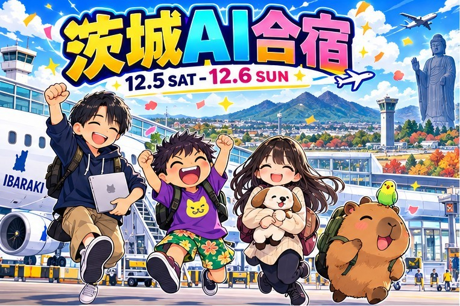
茨城AI合宿しおり
2026年12月5日（土）〜6日（日） つくば・牛久あたり／1泊2日
宿をとってくれた
お店を7つ発掘
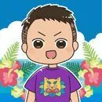
むらさき神戸から飛行機を手配
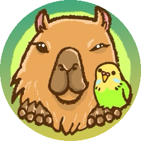
おけもん神戸からしおり係
5土1日目 茨城空港に着いて、つくばの古民家宿でAI談義
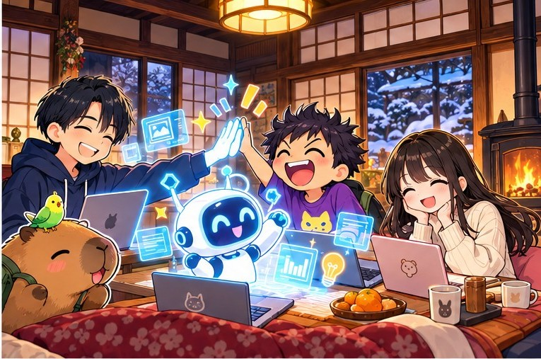
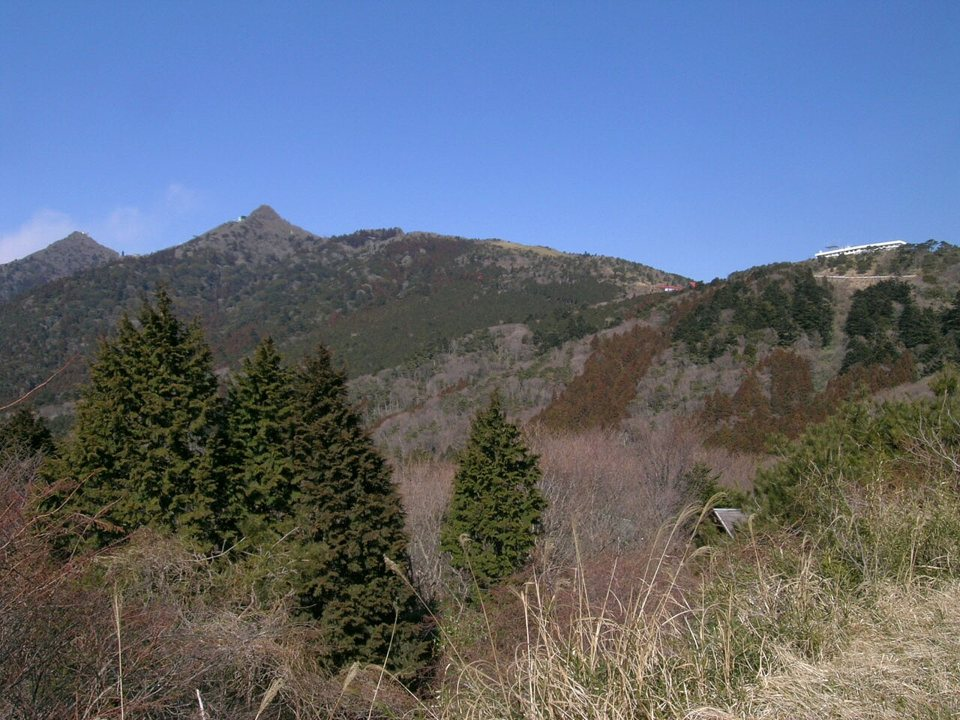
-
7:45神戸空港決まり ✈️ 神戸空港 7:45発 → 茨城空港 8:55着
関西組の2人は同じ便。チケットはむらさきが2人分とってくれました。
むらさきおけもん -
8:55〜茨城空港これから 🚕 茨城空港 → つくば
まっすー発見の「茨城空港の乗合タクシー（事前予約制）」が候補。むらさきが問い合わせてくれることに（10/14）。レンタカー案もあり。
乗合タクシーの案内（茨城空港）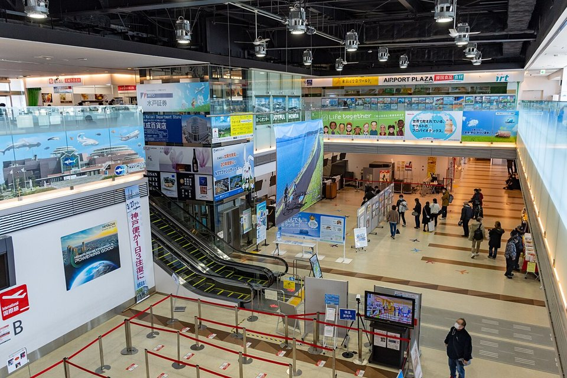
ここに着くよ！茨城空港のターミナル -
昼〜つくば決まり 🏡 貸切古民家「別邸（Antique Villa）」を拠点に
みずやんが予約してくれました（10/20）。寝室3つ・ベッド6台の一軒まるごと貸切。家みたいな拠点で、作業もAI談義もゆっくり。11月中旬まではキャンセルできるはずなので、予定を変えたい時は早めに。入れる時間はこれから確認。
予約 みずやん
宿のページ（Airbnb） -
夜つくばほぼ決まり 🛒 夜は古民家で宅飲みパーティー！
日中に茨城のちょっといい感じのスーパーへ行って、食べたいものを買い出し。夜は宿でわいわいしながらいただきます。1日目はみずやんがお子さん連れなので、お店より家で（みずやん案・11/1）。
提案 みずやん -
泊つくば決まり 🌙 古民家宿にお泊まり
関西組の2人はこの宿に泊まります（みずやん「ホテル取らなくて大丈夫！」）。みずやんは夜ごはんのあと、お子さんの寝かしつけで帰宅。まっすーは実家に泊まるならみずやんが一緒に送ってくれて、宿に泊まってもOK。
6日2日目 牛久でランチと大仏、夜の便で神戸へ
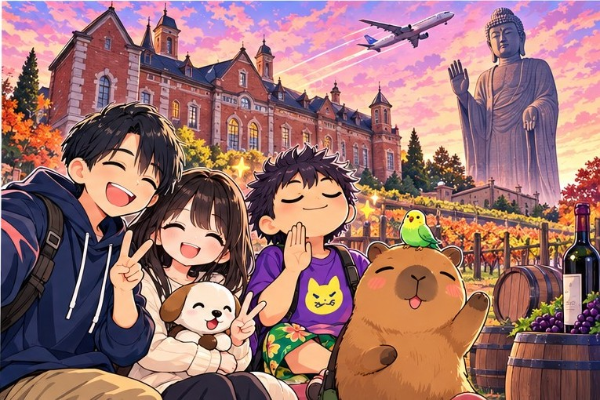
-
朝つくば→牛久ほぼ決まり 🚗 みずやんの車でお迎え → 牛久へ
みずやんが朝みんなを拾って、牛久方面へ。必要ならまっすーも拾ってから向かいます（お子さんは奥さんに預けてくれるそう）。
運転 みずやん -
昼牛久決まり 🍷 牛久シャトーのレストランでランチ ＋ 🗿 牛久大仏
まっすーが探してくれたランチ候補から、みずやん「ワイナリーのとこで決まりでいいと思う」（11/1）。うなぎ屋さんは11月から冬休みなので見送り。お店の予約はこれから。
牛久シャトー レストラン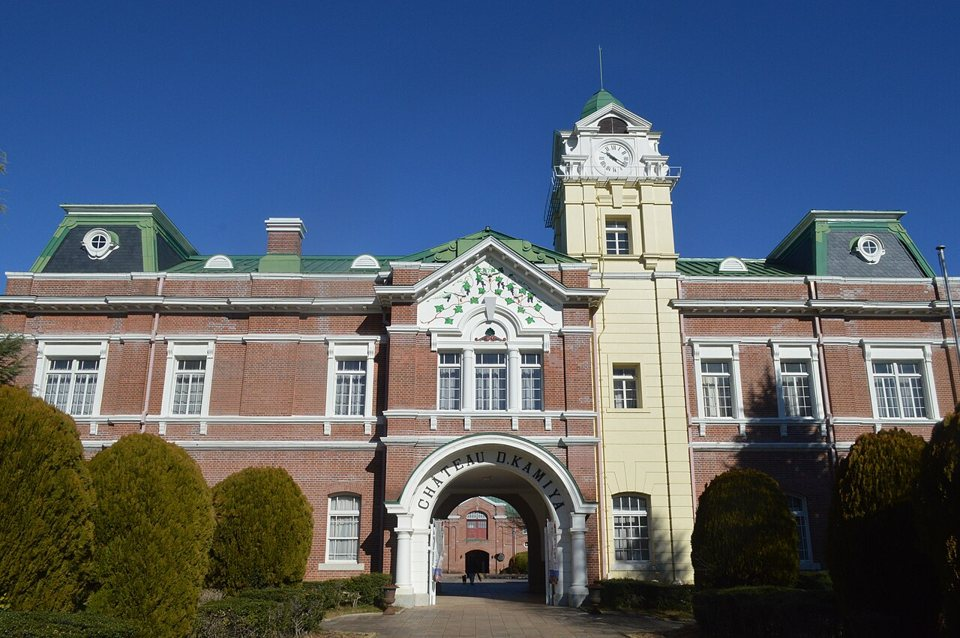
明治36年からの赤レンガの本館 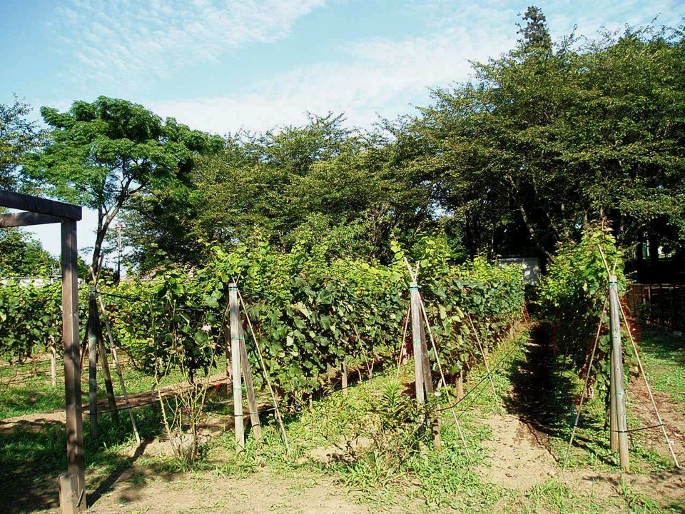
敷地のぶどう畑。ワインはここから 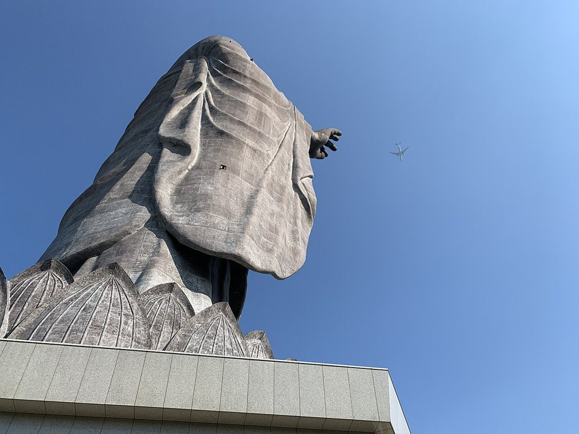
高さ120m！見上げる牛久大仏 -
午後牛久ほぼ決まり ☕ どこかカフェでおしゃべり
ランチのあとはカフェへ。みずやんは夕方前に帰る予定。
-
夕方→ 空港これから 🚕 茨城空港までの行き方
みずやんが帰ったあと、21:05の便まで。乗合タクシー・レンタカーなど、行き方はこれから。
-
21:05茨城空港決まり ✈️ 茨城空港 21:05発 → 神戸空港 22:20着
関西組の2人は同じ便で帰ります。
むらさきおけもん
決まり決まったこと
- 日にち：12/5（土）〜6（日）
- 行き先：つくばプラン（大洗プランではなく、つくば）
- 関西組の飛行機：行き・帰りとも手配ずみ
- 宿：貸切古民家「別邸」（みずやん予約）。関西組2人もここに泊まる
- 1日目の夜：スーパーで買い出しして、宿で宅飲み
- 2日目：みずやんの車で牛久へ → 牛久シャトーでランチ → カフェ
これからこれから決めること
- 行き：茨城空港 → つくばの足（乗合タクシー／レンタカー）むらさきが問い合わせ担当
- 帰り：つくば・牛久 → 茨城空港の足みんなで
- 宅飲みの買い出し：どのスーパーで何を買う？みんなで
- まっすーは宿に泊まる？実家？まっすー
- 集合・解散の時間、宿に入れる時間みんなで
- 2日目ランチのお店の予約これから
- 合宿で一緒にやりたいAIネタみんな持ち寄り
🍽️ まっすーが探してくれたお店 2日目ランチの候補（10/21）。ランチは牛久シャトーに決まったので、またの機会に
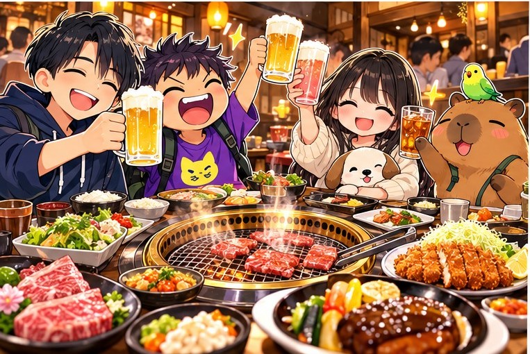
色のついた名前は、LINEで「気になる」と言った人。
LINEグループ「19日の東京」の会話（9/29〜11/1 16:35）をもとにまとめました。決まったら更新します。絵はChatGPTで描いたイメージで、実際のお店や宿の写真ではありません。まっすーのアイコンも、この絵から切り出したイメージです。
写真のクレジット：牛久シャトー本館 © Asturio Cantabrio（CC BY-SA 4.0）／牛久大仏 © inunami（CC BY 2.0）／筑波山 © Toshihiro Matsui（CC BY-SA 3.0）／茨城空港 SuFlyer（CC0）／ぶどう畑 Hasec（パブリックドメイン）。夜ごはんのお店の写真は、各カードからお店のページで見られます。